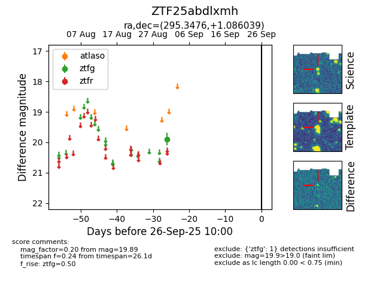

FINK: ZTF25abdlxmh
Lasair: ZTF25abdlxmh
ALeRCE: ZTF25abdlxmh
ZTF25abdlxmh (ztf,fink)
equatorial (ra, dec) = (295.3476,+1.08604)
galactic (l, b) = (39.6770,-10.58946)

last ztfg=19.89
1 ztfg detections